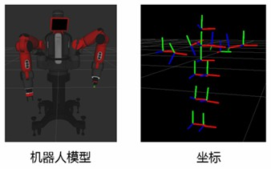
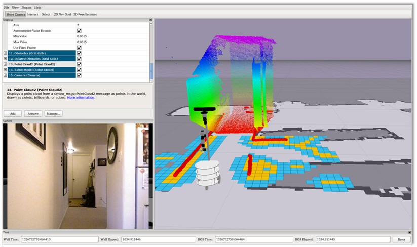

Rviz：三维可视化显示平台
大家有没有畅想过一个问题，机器人眼中的世界是什么样的呢？如何能够看到机器人摄像头拍摄到的图像？
这就涉及到可视化显示的范畴了，本讲我们介绍一位ROS中的重量级嘉宾——Rviz，一款三维可视化显示的神器。
Rviz三维可视化平台
机器人开发过程中，各种各样的功能，如果我们只是从数据层面去做分析，很难快速理解数据的效果，比如给你一堆0到255的数字，问这幅图像描述的内容是什么？你肯定一脸懵。但如果我们把这些数字通过颜色渲染出来，岂不就一目了然么？

类似的场景还有很多，比如机器人模型，我们需要知道自己设计的模型长啥样，还有模型内部众多坐标系在运动过程中都在哪些位置。
再比如机械臂运动规划和移动机器人自主导航，我们希望可以看到机器人周边的环境、规划的路径，当然还有传感器的信息，摄像头、三维相机、激光雷达等等，数据是用来做计算的，可视化的效果才是给人看的。
所以，数据可视化可以大大提高开发效率，Rviz就是这样一款机器人开发过程中的数据可视化软件，机器人模型、传感器信息、环境信息等等，全都可以在这里搞定。
Rviz介绍
一句话说明Rviz的功能，只要有数据，它就可以可视化，只有我们想不到的，没有Rviz做不到的。

Rviz的核心框架是基于Qt可视化工具打造的一个开放式平台，官方出厂就自带了很多机器人常用的可视化显示插件，只要我们按照ROS中的消息发布对应的话题，就可以看到图形化的效果了。如果我们对显示的效果不满意，或者想添加某些新的显示项，也可以在Rviz这个平台中，开发更多可视化效果，方便打造我们自己的上位机。
运行方法
启动一个终端，使用如下命令即可启动：
彩色相机仿真与可视化
摄像头肯定是最为常用的一种传感器了，我们先来给机器人装上摄像头。
仿真插件配置
关于传感器的仿真，都需要使用Gazebo提供的插件，摄像头对应的插件叫做libgazebo_ros_camera.so，我们对照模型的代码给大家介绍这个插件的使用方法。
learning_gazebo/urdf/sensers/camera_gazebo.xacro
<gazebo reference="${prefix}_link">
<sensor type="camera" name="camera_node">
<update_rate>30.0</update_rate>
<camera name="head">
<horizontal_fov>1.3962634</horizontal_fov>
<image>
<width>1280</width>
<height>720</height>
<format>R8G8B8</format>
</image>
<clip>
<near>0.02</near>
<far>300</far>
</clip>
<noise>
<type>gaussian</type>
<mean>0.0</mean>
<stddev>0.007</stddev>
</noise>
</camera>
<plugin name="gazebo_camera" filename="libgazebo_ros_camera.so">
<ros>
<!-- <namespace>stereo</namespace> -->
<remapping>~/image_raw:=image_raw</remapping>
<remapping>~/camera_info:=camera_info</remapping>
</ros>
<camera_name>${prefix}</camera_name>
<frame_name>${prefix}_link</frame_name>
<hack_baseline>0.2</hack_baseline>
</plugin>
</sensor>
</gazebo>
主要配置项如下：
- <sensor>标签：描述传感器
type：传感器类型，camera
name：摄像头命名，自由设置
- <camera>标签：描述摄像头参数
分辨率，编码格式，图像范围，噪音参数等
- <plugin>标签：加载摄像头仿真插件
运行仿真环境
模型已经配置好啦，能不能把摄像头成功仿真出来，并且在Rviz中看到图像信息，我们拭目以待。
可以使用命令行看下仿真出来的图像话题：
图像数据可视化
我们使用Rviz可视化显示图像信息，先来启动Rviz：
启动成功后，在左侧Displays窗口中点击“Add”，找到Image显示项，OK确认后就可以加入显示列表啦，然后配置好该显示项订阅的图像话题，就可以顺利看到机器人的摄像头图像啦。
三维相机仿真与可视化
二维摄像头不过瘾，想不想试试三维相机，比如我们常用的Kinect体感传感器，或者Intel的Realsense，可以获取外部环境的点云数据。这种相机的价格比usb摄像头可贵不少，不过我们也可以通过仿真，一分钱不用，就可以玩起来。
仿真插件配置
三维相机使用的Gazebo插件也是libgazebo_ros_camera.so，配置方法如下：
learning_gazebo/urdf/sensers/kinect_gazebo.xacro
<gazebo reference="${prefix}_link">
<sensor type="depth" name="${prefix}">
<always_on>true</always_on>
<update_rate>15.0</update_rate>
<pose>0 0 0 0 0 0</pose>
<camera name="kinect">
<horizontal_fov>${60.0*M_PI/180.0}</horizontal_fov>
<image>
<format>R8G8B8</format>
<width>640</width>
<height>480</height>
</image>
<clip>
<near>0.05</near>
<far>8.0</far>
</clip>
</camera>
<plugin name="${prefix}_controller" filename="libgazebo_ros_camera.so">
<ros>
<!-- <namespace>${prefix}</namespace> -->
<remapping>${prefix}/image_raw:=rgb/image_raw</remapping>
<remapping>${prefix}/image_depth:=depth/image_raw</remapping>
<remapping>${prefix}/camera_info:=rgb/camera_info</remapping>
<remapping>${prefix}/camera_info_depth:=depth/camera_info</remapping>
<remapping>${prefix}/points:=depth/points</remapping>
</ros>
<camera_name>${prefix}</camera_name>
<frame_name>${prefix}_frame_optical</frame_name>
<hack_baseline>0.07</hack_baseline>
<min_depth>0.001</min_depth>
<max_depth>300.0</max_depth>
</plugin>
</sensor>
</gazebo>
运行仿真环境
使用如下命令启动仿真环境：
启动成功后，可以看下当前的话题列表，已经产生了三维相机的相关话题。
点云数据可视化
运行Rviz：
同样的流程，点击Add，添加PointCloud2，设置订阅的点云话题，还要配置Rviz的参考系是odom，就可以看到点云数据啦，每一个点都是由xyz位置和rgb颜色组成。
激光雷达仿真与可视化
除了摄像头和三维相机，激光雷达也是很多移动机器人常备的传感器，包括自动驾驶汽车，我们也来试一试。
仿真插件配置
雷达使用的Gazebo插件是libgazebo_ros_ray_sensor.so，配置方法如下：
learning_gazebo/urdf/sensers/lidar_gazebo.xacro
<gazebo reference="${prefix}_link">
<sensor type="ray" name="rplidar">
<update_rate>20</update_rate>
<ray>
<scan>
<horizontal>
<samples>360</samples>
<resolution>1</resolution>
<min_angle>-3</min_angle>
<max_angle>3</max_angle>
</horizontal>
</scan>
<range>
<min>0.10</min>
<max>30.0</max>
<resolution>0.01</resolution>
</range>
<noise>
<type>gaussian</type>
<mean>0.0</mean>
<stddev>0.01</stddev>
</noise>
</ray>
<plugin name="gazebo_rplidar" filename="libgazebo_ros_ray_sensor.so">
<ros>
<namespace>/</namespace>
<remapping>~/out:=scan</remapping>
</ros>
<output_type>sensor_msgs/LaserScan</output_type>
</plugin>
</sensor>
</gazebo>
运行仿真环境
使用如下命令启动仿真环境：
在话题列表中也可以看到激光雷达啦。
点云数据可视化
启动Rviz：
点击Add，选择Laserscan，然后配置订阅的话题名，rviz的固定坐标系依然是odom，此时就可以看到激光点啦。
Rviz vs Gazebo
好啦，通过这几个案例，相信大家对Rviz可视化平台的使用流程已经非常熟悉了，也了解了常用传感器的仿真方法。
讲到这里，Gazebo和Rviz这两个软件的具体功能，大家是不是会有一些混淆。
我们再来强调下：
- Gazebo是仿真平台，核心功能是创造数据，我们没有机器人或者传感器，它可以帮我们做一个虚拟的；
- Rviz是可视化平台，核心功能是显示数据，如果没有数据，它也巧妇难为无米之炊。
所以在很多时候，我们使用Gazebo做机器人仿真的时候，也会启动Rviz来显示仿真环境的信息，如果自己手上有真实机器人的话，Gazebo就用不到了，不过还是会用Rviz显示真实机器人传感器的信息。
参考链接
https://www.stereolabs.com/docs/ros2/rviz2/